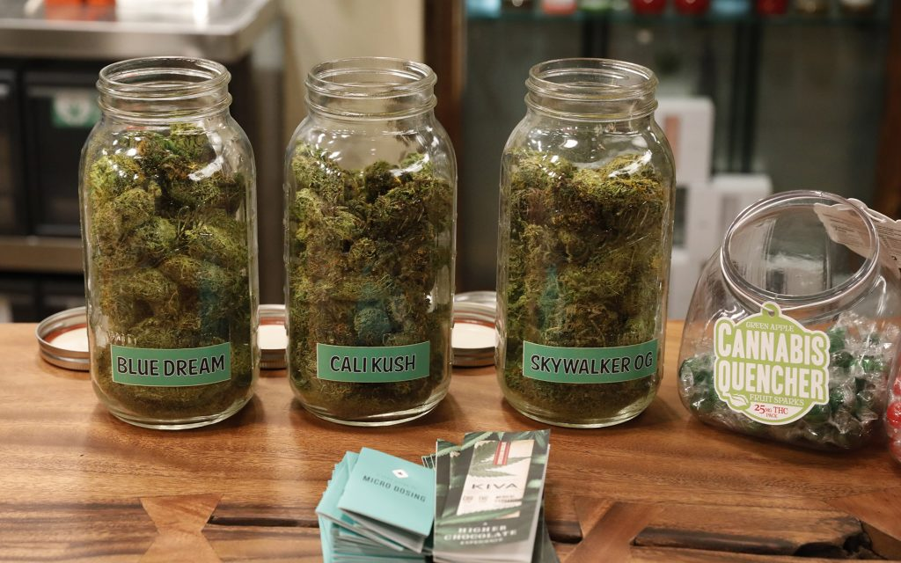

Welcome To Ruth's Alternative Caring!
Ruth's Alternative Caring is here to provide all your cannabis needs. Whether it's for medical, or recreational purposes, our huge selection of strains will have something that's right for you!
Suffering from anxiety? Try some Granddaddy Purp, an indica strain known to ease you into a peaceful mindset, or Jack Herer, a high-THC sativa that provides a gentle euphoric feeling mixed with some calming effects.
For the more experienced users, try our homegrown Blue Dream strain. The Blueberry indica and sativa Haze hybrid is known for its high amount of THC, perfect for relaxing and pain-relief. So come on down because like Ruth says, "When it comes to healing, there is no alternative!"
